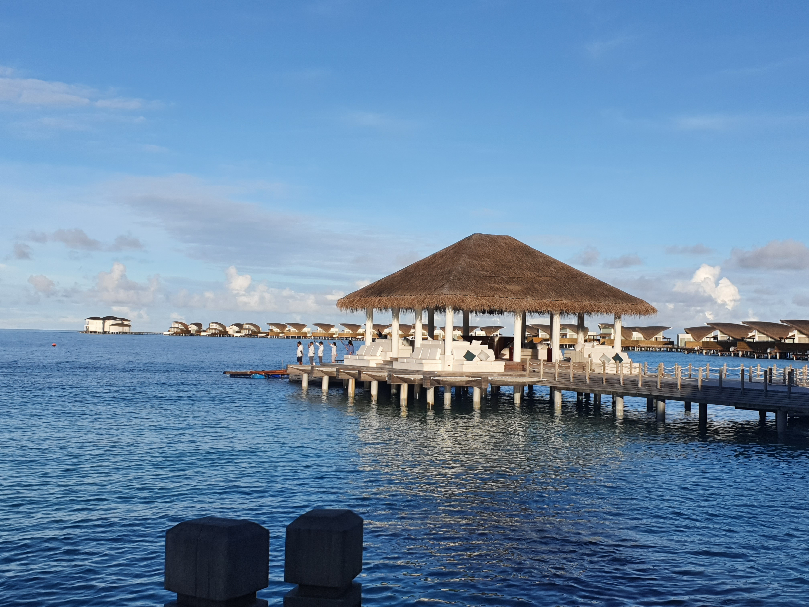
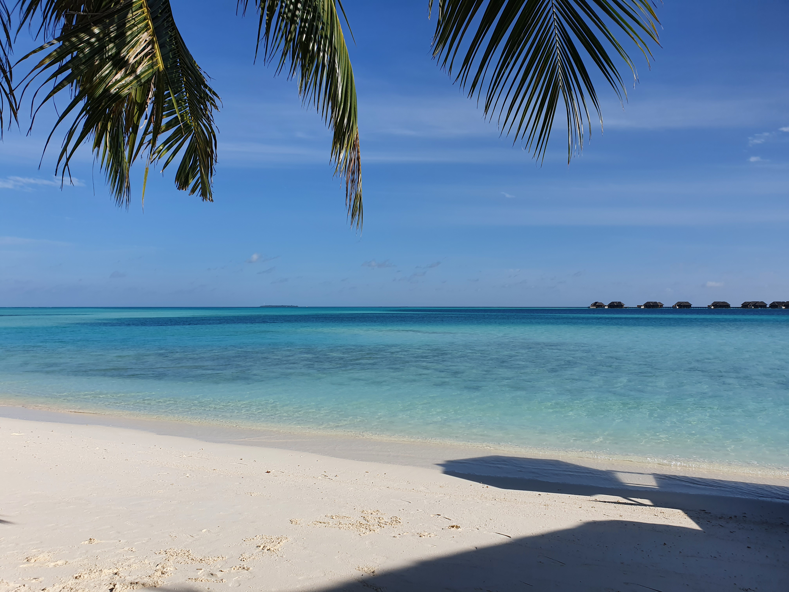
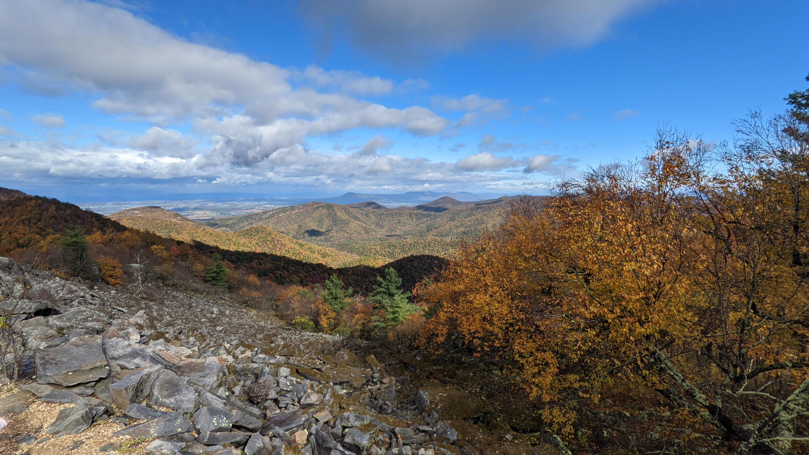
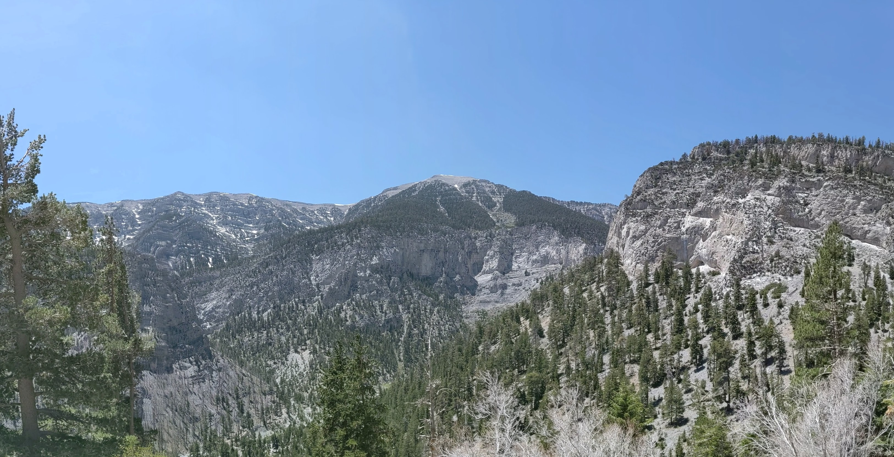

The depths of waters, or the might of mountains? The sound of waves, or the peace and quiet of mountains? A lovely laid-back beach vacation, or a serene and tranquil mountain retreat? The choices may differ for every traveler but it is unbelievable to witness how certain characteristics of a traveler leads them to make a choice between a beach or mountains. The traits have been crafted to capture the true essence of a traveler. Scroll down and decide for yourself whether you're a beach person or a mountain person.
Beach vacation
Tropical islands offer the perfect setting for a relaxing getaway that will let you recharge in a beautiful setting with palm trees and colorful sunsets.Going to the beach can improve your body's ability to fight off infections. The iodine in ocean water is a wonderful immune system booster. It is a natural antiseptic and even helps boost the function of your thyroid gland. You will notice a painful sting when an open cut is exposed to salt water, and that is a sign that your wound is being cleansed. Travel to Hawaii, the Caribbean, South Pacific, the Florida Keys, Bahamas and other amazing tropical destinations.


Mountain escape
While a lot of people prefer going somewhere sunny or to the beach for a little escape, very few actually consider the mountains. The terrain is rough, the weather is all over the place and sometimes, the facilities are not all that exquisite. That being said, the mountains are a place of extreme calm and offer so much more than you can imagine.


Five Reasons a Beach Vacation is Good for You
Sunshine is a great source of Vitamin D. Many of us are Vitamin D deficient, especially in the winter. Sunlight has also been shown to decrease depression.
Going to the beach can improve your body's ability to fight off infections. The iodine in ocean water is a wonderful immune system booster. It's a natural antiseptic and even helps boost the function of your thyroid gland.
The sand is a natural exfoliant for your skin.You'll slough off dead skin cells on your feet and hands without even trying.
The color blue is a subconscious soother. So looking at the ocean is relaxing. It's science!
You'll reconnect with yourself and your spirit. Whether or not you're a spiritual person, there's something about being by the ocean that puts you into a meditative state.
Five Reasons You Should Consider Mountain Vacation
Unmatched Beauty.Sure the terrain is rough and getting to some places may seem like a task but, if you are willing to look past that and actually notice things, you will realise that the mountains are actually filled with beauty.
The Air. One of the most important things the mountains have that you won't find anywhere else is clean air. Honestly, when you get there, take a deep breath and you'll immediately realise the difference.
Get some exercise.Fitness coaches explain that hiking enables you to burn hundreds of calories since it provides a full-body workout. Moreover, hiking is not even hard as it seems; once you get going, you will feel reinvigorated and ready for more.
Connect with your familyConnecting with your family on a deeper level can be challenging when you all have your own problems to worry about. Nevertheless, strengthening your bond with your kids can be easy once you take the time to disconnect from the rest of the world.
Adventures Of A Lifetime.From hiking to paragliding, the mountains offer a range of adventures that you'll never forget.